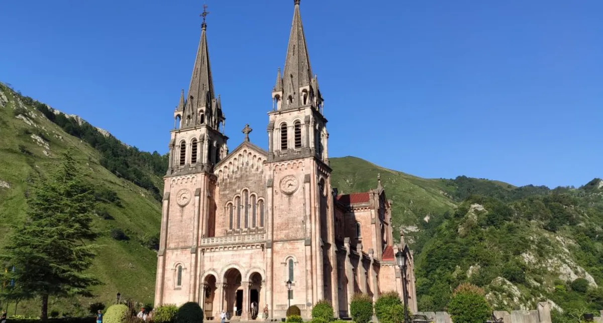

No. La Iglesia no ha reconocido como sobrenaturales los sucesos de Garabandal (1961–1965). Los obispos de Santander, la diócesis a la que pertenece el pueblo, sostienen desde los años sesenta que no consta su carácter sobrenatural, y en septiembre de 2024 el prefecto del Dicasterio para la Doctrina de la Fe recordó que esa sigue siendo la valoración. Eso sí: la devoción privada está permitida, y se puede visitar el pueblo y rezar allí.
Como Garabandal forma parte de nuestra peregrinación mariana 2027, queremos explicarte con claridad qué ha dicho la Iglesia, qué significa y cómo lo visitamos.
¿Dónde queda Garabandal?
San Sebastián de Garabandal es un pequeño pueblo de montaña del municipio de Rionansa, en Cantabria, al norte de España, dentro de la diócesis de Santander. En nuestra ruta lo visitamos el 18 de octubre de 2027, entre el santuario de Covadonga, en Asturias, y Lourdes, en Francia.

¿Qué pasó en Garabandal?
Entre 1961 y 1965, cuatro niñas del pueblo —Conchita González, Mari Loli Mazón, Jacinta González y Mari Cruz González— afirmaron haber visto al arcángel san Miguel y a la Virgen María, a la que identificaron como Nuestra Señora del Carmen. Vecinos y visitantes describieron éxtasis frecuentes, y las niñas transmitieron dos mensajes, en 1961 y 1965, que hablaban de la Eucaristía, la penitencia y la conversión.
Los hechos atrajeron a miles de visitantes, y todavía hoy el pueblo recibe personas de muchos países, en especial de Estados Unidos y Canadá.
¿Qué ha dicho la Iglesia sobre Garabandal?
Discernir unas presuntas apariciones corresponde, en primer lugar, al obispo del lugar. Estas son las posturas principales:
- 1961–1970: los obispos de Santander de esos años concluyeron que no constaba el carácter sobrenatural de los hechos.
- 1977–1991: el obispo Juan Antonio del Val reafirmó esa postura y encargó un estudio interdisciplinar, que llegó a la misma conclusión: no demuestra la sobrenaturalidad.
- 1991–1992: el obispo José Vilaplana presentó el estudio a la Congregación para la Doctrina de la Fe, que en 1992 respondió que no veía oportuno intervenir y dejó el asunto en manos del obispo. Vilaplana mantuvo las decisiones de sus predecesores e indicó que en Garabandal la Misa solo se celebre en la iglesia parroquial, con permiso del párroco y sin referencia a las supuestas apariciones.
- 2022: el obispo Manuel Sánchez Monge afirmó que su postura es la misma que la de sus predecesores: no hay signos de sobrenaturalidad.
- 2024: en la rueda de prensa sobre Medjugorje del 19 de septiembre, el cardenal Víctor Manuel Fernández, prefecto del Dicasterio para la Doctrina de la Fe, explicó que sobre Garabandal se mantiene un non constat: no hay elementos suficientes para concluir que sea sobrenatural. Aclaró que eso no equivale a declarar que sea falso, y que se permite la devoción privada —rezar en el lugar y asistir a Misa en la parroquia—, pero no el culto público ligado a los mensajes y las supuestas apariciones.
¿Qué significa non constat? Garabandal frente a Fátima, Lourdes y Medjugorje
En mayo de 2024, el Dicasterio para la Doctrina de la Fe publicó nuevas normas para discernir presuntos fenómenos sobrenaturales. Según esas normas, por regla general ni el obispo ni el Dicasterio declaran que un fenómeno sea de origen sobrenatural; lo que hacen es indicar si la devoción puede valorarse, debe acompañarse con cuidado o no debe promoverse.
El cardenal Fernández comparó la situación de Garabandal con la categoría curatur: se aplica cuando hay elementos críticos importantes pero la devoción ya está extendida, y pide al obispo no fomentarla, sin prohibirla. Es una situación distinta de la de otros santuarios:
- Fátima y Lourdes: apariciones reconocidas por los obispos del lugar, en 1930 y en 1862.
- Medjugorje: en septiembre de 2024 recibió el nihil obstat para la experiencia espiritual que allí se vive, sin declararse sobrenatural. Lo explicamos en qué se vive en Medjugorje.
- Garabandal: non constat; devoción privada permitida, sin culto público vinculado a los mensajes.
¿Y las profecías del Aviso y el Milagro?
Muchas búsquedas sobre Garabandal tienen que ver con el «Aviso», el «Milagro» y el «Castigo» que, según las videntes, ocurrirían en el futuro. La Iglesia no ha reconocido esos mensajes ni sus anuncios, y ningún católico está obligado a creer en ellos. Conviene recibir con prudencia las fechas y predicciones que circulan por internet.
El Catecismo de la Iglesia Católica recuerda que las revelaciones privadas, incluso las reconocidas, no forman parte del depósito de la fe: su papel es ayudar a vivirla más plenamente (n. 67). Nuestra fe se apoya en Jesucristo, presente en la Eucaristía.
¿Se puede peregrinar a Garabandal?
Sí. La devoción privada está permitida y el pueblo recibe visitantes todo el año. Lo que la Iglesia pide es no organizar culto público en torno a las supuestas apariciones ni presentarlas como aprobadas.
Así lo vivimos en nuestra peregrinación: el 18 de octubre de 2027 celebramos la Misa en el santuario de Covadonga y después viajamos a Garabandal para un tiempo de oración y la subida a Los Pinos, donde rezamos el rosario. Esa misma tarde seguimos hacia Lourdes. Visitamos el lugar con respeto y en comunión con la Iglesia, poniendo a Cristo en el centro.

Garabandal en nuestra peregrinación mariana 2027
- Fecha:
- 18 de octubre de 2027.
- Ese día:
- Misa en el santuario de Covadonga, oración en Garabandal y subida a Los Pinos; por la tarde, viaje a Lourdes.
- Peregrinación completa:
- del 12 al 23 de octubre de 2027 (12 días / 11 noches) por Fátima, Salamanca, Covadonga, Garabandal, Lourdes, Zaragoza y Ávila.
- Acompañamiento espiritual:
- P. Juan Carlos Álvarez Pérez, con Misa diaria.
- Salidas:
- desde cualquier ciudad de Estados Unidos o desde cualquier parte del mundo. Te ayudamos a coordinar vuelos y conexiones para unirte al grupo.
- Precio:
- desde USD 4.649 saliendo desde Estados Unidos, con vuelo incluido. Precio válido hasta el 30 de diciembre de 2026.
Si quieres conocer los demás santuarios de la ruta, lee nuestra guía de la peregrinación mariana por Fátima, Lourdes y España o el artículo sobre Fátima el 13 de octubre.
Sigue la ruta con nuestra guía de peregrinación a Lourdes.
¿Tienes preguntas sobre Garabandal o sobre la ruta? Del 12 al 23 de octubre de 2027 peregrinaremos a Fátima, Lourdes y los santuarios marianos de España, con el P. Juan Carlos Álvarez Pérez y Misa diaria. Puedes unirte desde cualquier ciudad de Estados Unidos o desde cualquier parte del mundo. Escríbenos por WhatsApp y te respondemos.
💬 Escribirnos por WhatsApp Ver peregrinación mariana 2027Fuentes: Carta del obispo José Vilaplana sobre Garabandal (EWTN, en inglés); EWTN Noticias / ACI Prensa: el Vaticano se pronuncia sobre Garabandal (20 de septiembre de 2024); CNA: declaración del obispo de Santander (2022, en inglés); Dicasterio para la Doctrina de la Fe: Normas para el discernimiento de presuntos fenómenos sobrenaturales (2024).